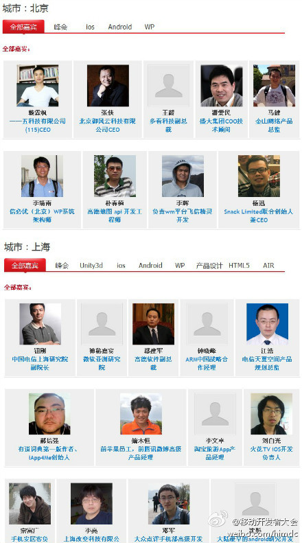

到时一定去看看。//@catfly廖湘宁: @懒人迟春亮 @真杨晓明 @锈弹簧zhengyang @老杨_懒汉互联 @团队热线 @Ada李力 @艾德思奇adSage @开源中国 @皮蛋瘦肉粥 @赵客观天 @纳米咖啡 @郭少瑞_NeoGuo @7yue @Peter-黄竣 @James李鹏 冲刺啦，大家帮忙
@你好啊1_45262:
#2012移动开发者大会#：北京，上海的绝大部分嘉宾信息已经更新到官网 网页链接 ，大会报名与宣传目前已经进入冲刺阶段。此次大会的定位是面向开发者的技术交流大会，并且是各大垂直技术社区的广泛联合，必将是一次开发者与专家分享交流的技术盛会。报名请进：网页链接
网页链接 ，大会报名与宣传目前已经进入冲刺阶段。此次大会的定位是面向开发者的技术交流大会，并且是各大垂直技术社区的广泛联合，必将是一次开发者与专家分享交流的技术盛会。报名请进：网页链接
- 